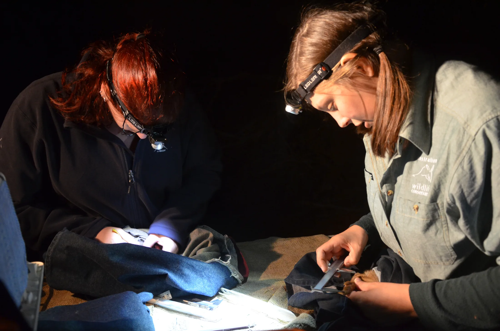

Grant Finding Service
You read one email a month. I read the rest.
Grant Scout is my monthly grant finding service for conservation, environment and purpose-led organisations, nonprofit or for-profit, based in Australia and working wherever you are. One report a month, matched to your organisation, every opportunity rated for how well you actually fit it. The trawling, the alerts you lose, the 11pm "was that still open?"... mine now. You open one email and make the call.
Book my discovery call(opens in new tab)You've scrolled the portals, signed up for the alerts, and bookmarked tabs you never opened again. (Still no clearer.)
The funding's out there. You just can't tell how much of it is actually for you. And while you're heads-down on the work you're actually there to do, you've no idea what's sliding past.
Here's the shape of it: the grants you'd genuinely win sit buried in the hundreds you'd never qualify for. Good news is, sorting one from the other stops being your job. You need someone who knows the conservation, environment and purpose-led sector, checks what you're actually eligible for, and hands you a shortlist instead of a search result. Someone like me (hello).
Word on the street.
"If there's an opportunity, mostly we let them pass. We don't even bother replying. Or everyone tries to contribute, and it's a real scramble."A founder, on a discovery call
"Isn't there a free grant search that does this?"
Not really. The free portals are the government ones, and they only list government grants. That's one slice of what you might be eligible for. The databases that cover the rest? A paid subscription, for a tool you still have to search yourself.
And the searching is the expensive part. Every lead means reading the guidelines, checking the criteria, working out whether you're even competitive... often to land on "not eligible after all." Run that down a whole list, at what your time's worth, and the "free" search is the priciest thing on your desk.
Grant Scout does that reading for you, grant by grant, criterion by criterion. You only ever see the ones you genuinely fit, and could genuinely win. Your mornings go back to the work you're there to do.
How does the monthly grant intelligence report work? (Your part's smaller than you'd think.)
- You: tell me about your organisation once, at the start, so I know what you do and what you're eligible for.
- Me: I search, match and read every opportunity myself, as someone who works in your sector, then rate each one green, amber or red, with the funder, the amount, the deadline and a plain-English take on where you stand.
- You: open one report a month, we talk it through on a call, and you decide what's worth chasing.
Two ways in (both month to month, walk away whenever).
Focused Finder · $440/month
For when you just need to know what's out there, and what's genuinely for you.
- A monthly grant opportunities report matched to your organisation's search profile, every opportunity rated green, amber or red for eligibility
- Priority email alerts for urgent, high-fit deadlines between reports
- A 30-minute monthly call to go through the report and decide what to pursue
- 5% discount on grant writing
Grant Ready · $770/month (the one most people want)
For when you want to be ready to win, not just aware of what's open. Everything in Focused Finder, plus:
- A second 60-minute monthly call for readiness coaching
- A 6 to 12 month funding roadmap, kept up to date
- A readiness gap analysis, so when a strong opportunity needs something you don't have in place yet, you've got the lead time to build it
- Systems to track the data you'll need for milestone reports later
- Limited support with reporting requirements, for grants you win through Grant Scout
- 10% discount on grant writing
And when a grant's worth going after, I write it.
Most grant writers write the words and submit them. That's it. Which is fine, right up until the budget doesn't match the story you just told, or the project design doesn't hold up against what you promised. My grant writing goes further: I build the strategy, plan the budget with you, and design the project delivery before a word of the application gets written, so the whole submission argues one consistent case. It sits outside the retainer, quoted per grant with your tier discount applied, scoped and costed before any work starts. No surprises, and no writing you didn't ask for.
"Jess was quick, available, and understood our grant and our application. She delivered the full application with minimal input from us, in a timely manner."Jackie McCallum, Thirst Foundation
When finding isn't the hard part anymore
Some organisations reach the point where they can see the opportunities coming and just want someone to own the whole thing: the strategy, the applications, the funder relationships. That's the Strategic Funding Partnership. Plenty of people start on Grant Scout and move across when the time's right. No rush.
The feeling's mutual.
"I have an advantage because we have a very similar background... you probably get the stuff that I need to communicate quite quickly."A Grant Scout client, on a discovery call (both of us scientists)
Before you book the call
How do I find grants my organisation is actually eligible for?
You match what you do against each grant's eligibility criteria, one at a time, before you sink hours into an application. That's the slow part, and it's exactly what Grant Scout does for you: a monthly report of live opportunities matched to your organisation, each rated green, amber or red for how well you fit. You see the ones worth pursuing without reading a hundred guidelines to get there, and I do this for organisations wherever they're based.
Isn't there a free grant search I can just use?
The free ones are the government portals, and they only list government grants, one slice of what you might be eligible for. The databases that cover everything else charge a subscription, and either way you're still the one doing the searching. Grant Scout is the search done for you, matched and rated, so what you save is the hours you'd have lost finding out you weren't eligible after all.
What's the easiest grant to get?
The easiest grant to get is the one you're genuinely eligible and competitive for, not the one with the shortest form. Chasing "easy" grants usually means chasing ones you'll lose, or ones too small to be worth the effort. Grant Scout points you at the best-matched opportunities instead, which is where your odds and your return both sit.
What should I not say when applying for a grant?
Avoid promising outcomes you can't evidence, and avoid writing about what you do instead of what the funder actually funds. Assessors read for fit against their criteria and for proof you can deliver, so vague impact language and unbacked claims cost you marks. I read grants from the assessor's side, so I can flag where an application is talking past the funder before it goes in.
Can a for-profit or social enterprise get grant funding, or is it only for charities?
Yes, a for-profit or social enterprise can get grant funding, though the pool and the pathways differ. Government innovation, sustainability and R&D grants are often open to purpose-led businesses directly, and partnering with an eligible nonprofit or university opens others. The catch is knowing which is which, which is the whole point of matching you to what you're genuinely eligible for.
Can't I just ask ChatGPT to find grants for me?
You can ask, but you can't trust the list. AI tools confidently return grants that are closed, misquoted or invented, and they can't check your eligibility against a live funder's criteria. Grant Scout is a real person who knows the sector, checking real, open opportunities against your organisation, so what lands in your report actually exists and actually fits.
What does Grant Scout cost, and is grant writing included?
Grant Scout is $440 a month for Focused Finder and $770 a month for Grant Ready, both month to month with no lock-in. Grant writing sits outside the retainer, because every application differs in scope, so I quote each one per grant with your tier discount applied (5% on Focused Finder, 10% on Grant Ready). I scope and cost any writing before it starts, so there are no surprises.
How do you decide which grants are worth pursuing?
I rate every opportunity green, amber or red against your organisation's eligibility and fit, then we use your monthly call to decide what's worth your time. A good grant service tells you which grants to skip, not just which ones exist, because chasing the wrong ones is where most of the time gets burned. Green means go, amber means it depends, red means leave it.
A free discovery call to work out what you actually need.
We'll talk through where your funding's at, whether Grant Scout's the right fit, and which tier makes sense. And if it isn't a fit? I'll tell you that too.
Book my discovery call(opens in new tab)